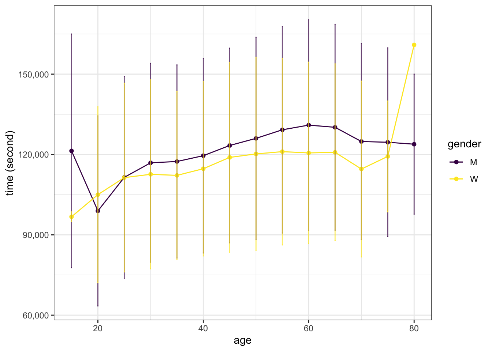
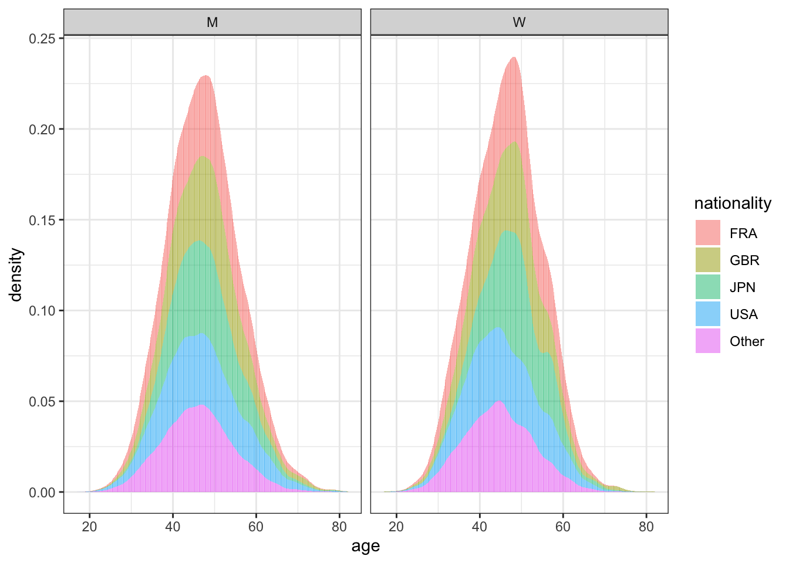
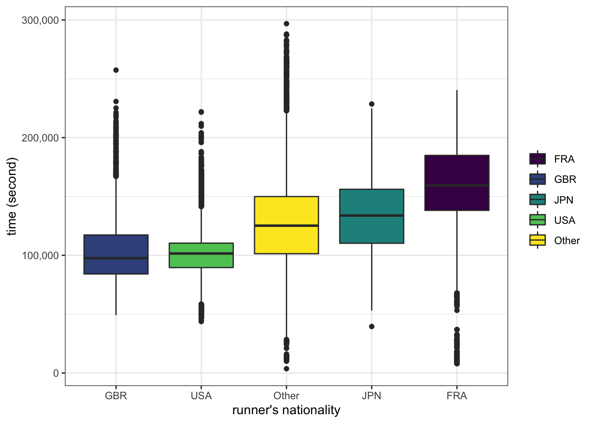
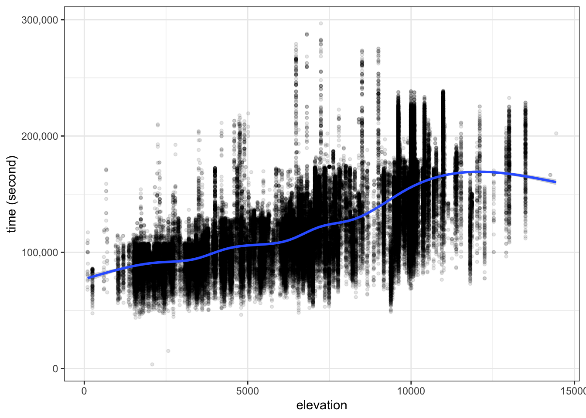
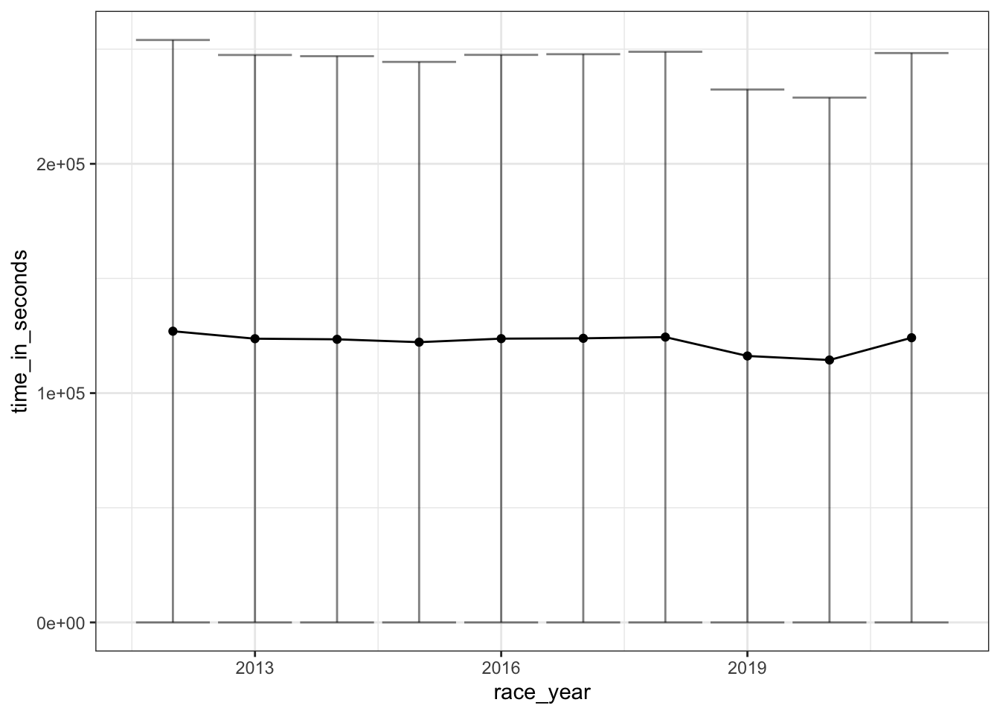
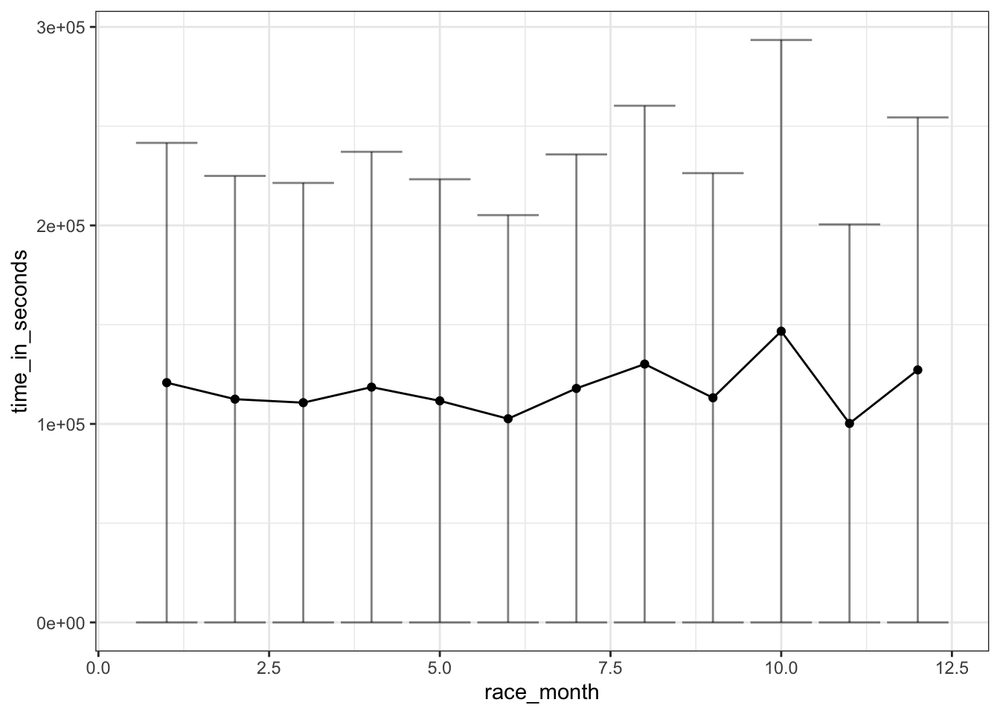
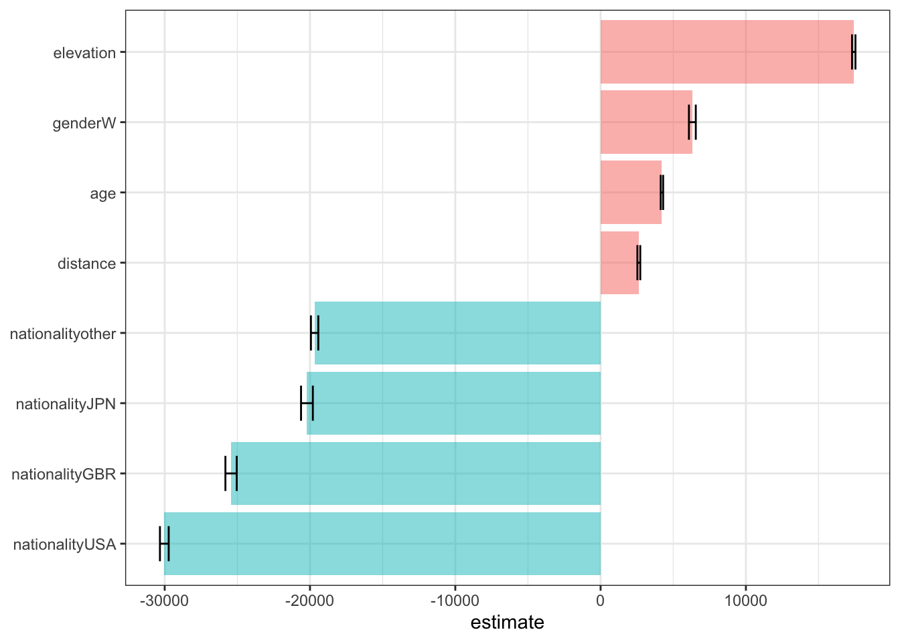
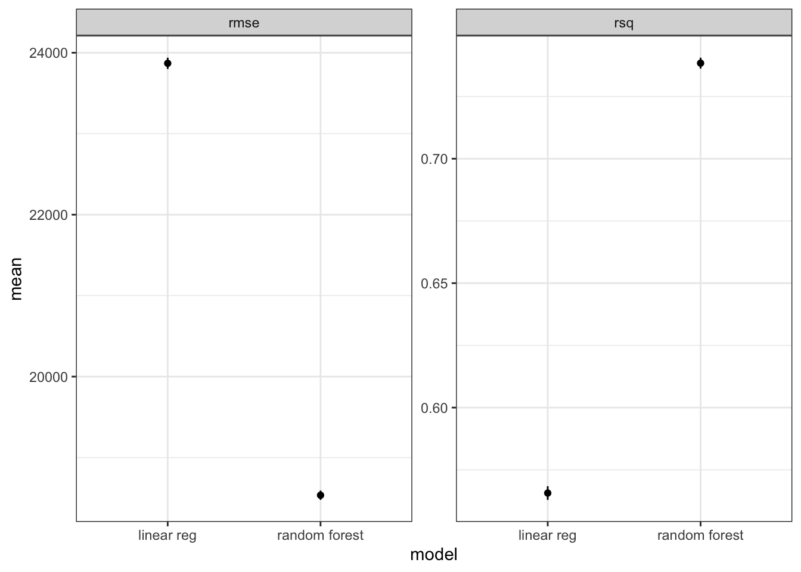

Code
library(tidyverse)
library(tidymodels)
library(lubridate)Chun Su
November 2, 2021
Load required libraries
Data README is available at here.
| Name | ultra_join |
| Number of rows | 137803 |
| Number of columns | 20 |
| _______________________ | |
| Column type frequency: | |
| character | 9 |
| Date | 1 |
| difftime | 1 |
| numeric | 9 |
| ________________________ | |
| Group variables | None |
Variable type: character
| skim_variable | n_missing | complete_rate | min | max | empty | n_unique | whitespace |
|---|---|---|---|---|---|---|---|
| runner | 0 | 1.00 | 3 | 52 | 0 | 73629 | 0 |
| time | 17791 | 0.87 | 8 | 11 | 0 | 72840 | 0 |
| gender | 30 | 1.00 | 1 | 1 | 0 | 2 | 0 |
| nationality | 0 | 1.00 | 3 | 3 | 0 | 133 | 0 |
| event | 0 | 1.00 | 4 | 57 | 0 | 435 | 0 |
| race | 0 | 1.00 | 3 | 63 | 0 | 371 | 0 |
| city | 15599 | 0.89 | 2 | 30 | 0 | 308 | 0 |
| country | 77 | 1.00 | 4 | 17 | 0 | 60 | 0 |
| participation | 0 | 1.00 | 4 | 5 | 0 | 4 | 0 |
Variable type: Date
| skim_variable | n_missing | complete_rate | min | max | median | n_unique |
|---|---|---|---|---|---|---|
| date | 0 | 1 | 2012-01-14 | 2021-09-03 | 2017-10-13 | 711 |
Variable type: difftime
| skim_variable | n_missing | complete_rate | min | max | median | n_unique |
|---|---|---|---|---|---|---|
| start_time | 0 | 1 | 0 secs | 82800 secs | 05:00:00 | 39 |
Variable type: numeric
| skim_variable | n_missing | complete_rate | mean | sd | p0 | p25 | p50 | p75 | p100 | hist |
|---|---|---|---|---|---|---|---|---|---|---|
| race_year_id | 0 | 1.00 | 26678.70 | 20156.18 | 2320 | 8670.0 | 21795.0 | 40621 | 72496.0 | ▇▃▃▂▂ |
| rank | 17791 | 0.87 | 253.56 | 390.80 | 1 | 31.0 | 87.0 | 235 | 1962.0 | ▇▁▁▁▁ |
| age | 0 | 1.00 | 46.25 | 10.11 | 0 | 40.0 | 46.0 | 53 | 133.0 | ▁▇▂▁▁ |
| time_in_seconds | 17791 | 0.87 | 122358.26 | 37234.38 | 3600 | 96566.0 | 114167.0 | 148020 | 296806.0 | ▁▇▆▁▁ |
| distance | 0 | 1.00 | 154.08 | 39.22 | 0 | 160.9 | 162.6 | 168 | 179.1 | ▁▁▁▁▇ |
| elevation_gain | 0 | 1.00 | 6473.94 | 3293.50 | 0 | 3910.0 | 6640.0 | 9618 | 14430.0 | ▅▆▆▇▁ |
| elevation_loss | 0 | 1.00 | -6512.20 | 3305.73 | -14440 | -9618.0 | -6810.0 | -3950 | 0.0 | ▁▇▆▅▅ |
| aid_stations | 0 | 1.00 | 9.58 | 7.56 | 0 | 0.0 | 12.0 | 16 | 56.0 | ▇▇▁▁▁ |
| participants | 0 | 1.00 | 510.75 | 881.25 | 0 | 0.0 | 65.0 | 400 | 2900.0 | ▇▁▁▁▁ |
We want to estimate the time (time_in_seconds) for runner to finish based on the features.
ultra_join %>%
filter(!is.na(time_in_seconds)) %>%
filter(!is.na(gender)) %>%
filter(age > 10, age < 100) %>%
mutate(age_decade = 5* (age %/% 5)) %>%
select(time_in_seconds, gender, age, age_decade) %>%
group_by(age_decade, gender) %>%
summarise(
time_in_seconds_sd = sd(time_in_seconds),
time_in_seconds = mean(time_in_seconds)
) %>%
ggplot(aes(x = age_decade, color=gender, group=gender)) +
geom_point(aes(y=time_in_seconds)) +
geom_line(aes(y=time_in_seconds)) +
geom_errorbar(aes(ymin=time_in_seconds - time_in_seconds_sd, ymax=time_in_seconds + time_in_seconds_sd), width=0.2, alpha=0.7) +
scale_color_viridis_d() +
labs(x = "age", y = "time (second)") +
scale_y_continuous(labels = scales::label_comma())
# A tibble: 4 × 2
nationality n
<fct> <int>
1 Other 50563
2 USA 47259
3 FRA 28905
4 GBR 11076
nationality
ultra_join %>%
filter(!is.na(time_in_seconds)) %>%
filter(!is.na(gender)) %>%
filter(age > 10, age < 100) %>%
mutate(nationality = fct_lump(nationality, prop=0.05)) %>%
ggplot(aes(x=fct_reorder(nationality, time_in_seconds), y=time_in_seconds, fill=nationality)) +
geom_boxplot() +
scale_fill_viridis_d() +
labs(x="runner's nationality", fill=NULL, y="time (second)") +
scale_y_continuous(labels = scales::label_comma())
ultra_join %>%
filter(!is.na(time_in_seconds)) %>%
filter(distance >= 150) %>%
mutate(elevation = ifelse(
elevation_gain > abs(elevation_loss), elevation_gain, abs(elevation_loss)
)) %>%
ggplot(aes(x=elevation , y=time_in_seconds)) +
geom_point(alpha=0.1, size=1) +
geom_smooth() +
labs(y="time (second)") +
scale_y_continuous(labels = scales::label_comma())
The year of the race
ultra_join %>%
filter(!is.na(time_in_seconds)) %>%
mutate(
race_year=lubridate::year(date),
race_month=lubridate::month(date)
) %>%
group_by(race_year) %>%
summarise(
time_in_seconds_sd=mean(time_in_seconds),
time_in_seconds=mean(time_in_seconds)
) %>%
ungroup() %>%
ggplot(aes(x=race_year, y=time_in_seconds)) +
geom_point() +
geom_line() +
geom_errorbar(aes(ymin=time_in_seconds - time_in_seconds_sd, ymax=time_in_seconds + time_in_seconds_sd), alpha=0.5)
The month of race can be the proxy to estimate the season when race was hosted. However, here I did not take the geographic information (hemisphere) into consideration.
ultra_join %>%
filter(!is.na(time_in_seconds)) %>%
mutate(
race_year=lubridate::year(date),
race_month=lubridate::month(date)
) %>%
group_by(race_month) %>%
summarise(
time_in_seconds_sd=mean(time_in_seconds),
time_in_seconds=mean(time_in_seconds)
) %>%
ungroup() %>%
ggplot(aes(x=race_month, y=time_in_seconds)) +
geom_point() +
geom_line() +
geom_errorbar(aes(ymin=time_in_seconds - time_in_seconds_sd, ymax=time_in_seconds + time_in_seconds_sd), alpha=0.5)
Here I will perform two distinct models – linear regression and random forest to predict the race time using runner’s gender, age, nationality, elevation and distance of race.
inistal split to train and test
ultra_df <- ultra_join %>%
filter(!is.na(time_in_seconds)) %>%
filter(!is.na(gender)) %>%
filter(age > 10, age < 100) %>%
filter(distance >= 150) %>%
mutate(elevation = ifelse(
elevation_gain > abs(elevation_loss),
elevation_gain,
abs(elevation_loss)
)
) %>%
select(time_in_seconds, age, gender, nationality, distance, elevation)
set.seed(2021)
ultra_split <- initial_split(ultra_df, strata = time_in_seconds)
ultra_train <- training(ultra_split)
ultra_test <- testing(ultra_split)create resamples for cross validation
ultra_rec <- recipe(time_in_seconds ~., data = ultra_train) %>%
step_other(nationality) %>%
step_normalize(all_numeric_predictors()) %>%
step_string2factor(all_nominal_predictors()) %>%
# step_dummy(all_nominal_predictors()) %>%
I()
# want to test whether dummy variables affect the model behave
ind_rec <- ultra_rec %>%
step_dummy(all_nominal_predictors())specify models
Does linear model need dummy variable? Using workflow_set to test
# A tibble: 4 × 9
wflow_id .config preproc model .metric .esti…¹ mean n std_err
<chr> <chr> <chr> <chr> <chr> <chr> <dbl> <int> <dbl>
1 nodummy_linear_reg Prepro… AsIs line… rmse standa… 2.39e+4 10 6.94e+1
2 nodummy_linear_reg Prepro… AsIs line… rsq standa… 5.66e-1 10 2.73e-3
3 dummy_linear_reg Prepro… AsIs line… rmse standa… 2.39e+4 10 6.94e+1
4 dummy_linear_reg Prepro… AsIs line… rsq standa… 5.66e-1 10 2.73e-3
# … with abbreviated variable name ¹.estimatorBased on the r-square value, the linear model with age, distance, elevation, gender and nationality explained ~57% variance of time_in_seconds.
Using dummy variable or not does not change the metrics. In fact, the number of coefficients will be exactly same no matter whether using dummy or not. Below shows coefficients of linear regression by fitting the “nodummy_linear_reg” workflow to the training data.
# A tibble: 9 × 5
term estimate std.error statistic p.value
<chr> <dbl> <dbl> <dbl> <dbl>
1 (Intercept) 142711. 217. 658. 0
2 age 4220. 83.3 50.6 0
3 genderW 6315. 236. 26.8 1.82e-157
4 nationalityGBR -25432. 389. -65.3 0
5 nationalityJPN -20211. 406. -49.8 0
6 nationalityUSA -30025. 302. -99.6 0
7 nationalityother -19682. 254. -77.6 0
8 distance 2630. 99.2 26.5 2.65e-154
9 elevation 17421. 117. 149. 0 lm_coef %>%
filter(term!="(Intercept)") %>%
ggplot(aes(x = estimate, y = fct_reorder(term, estimate))) +
geom_col(aes(fill=(estimate < 0)), alpha = 0.5) +
geom_errorbar(aes(xmin=estimate - std.error, xmax = estimate + std.error), width=0.5) +
theme(legend.position = 'none') +
labs(fill=NULL, y = NULL)
Elevation, being a women (compare to being a men), age and distance positively affect race time, while racers from JPN/GBR/USA/other (compare to racers from FRA) finish the race in shorter time.
Using random forest as model to get Resampling results
# A tibble: 2 × 6
.metric .estimator mean n std_err .config
<chr> <chr> <dbl> <int> <dbl> <chr>
1 rmse standard 18535. 10 57.2 Preprocessor1_Model1
2 rsq standard 0.738 10 0.00219 Preprocessor1_Model1Compared to linear model shown above, random forest with same predictors can explain more variance of Y (74% vs. 56%) and show smaller rmse (1.8e4 vs. 2.4e4).
bind_rows(
rf_rs %>%
collect_metrics() %>%
select(.metric, mean, std_err) %>%
mutate(model = "random forest"),
lm_rs %>%
collect_metrics() %>%
filter(wflow_id == 'nodummy_linear_reg') %>%
select(.metric, mean, std_err) %>%
mutate(model = "linear reg")
) %>%
ggplot(aes(x = model, y = mean)) +
facet_wrap(vars(.metric), scales = 'free') +
geom_point() +
geom_errorbar(aes(ymin=mean - std_err, ymax=mean + std_err), width=0)
Notes: above plot can also be done by autoplot if we perform the comparison between linear regression and random forest models using workflow_set.
last_fit test data using random forest result# A tibble: 2 × 4
.metric .estimator .estimate .config
<chr> <chr> <dbl> <chr>
1 rmse standard 18558. Preprocessor1_Model1
2 rsq standard 0.737 Preprocessor1_Model1Different from fit_resample results, these metrics are calculated on the test data. The value is very close to the values done on training data (resample data), thus the model is not over-fitted.
══ Workflow [trained] ══════════════════════════════════════════════════════════
Preprocessor: Recipe
Model: rand_forest()
── Preprocessor ────────────────────────────────────────────────────────────────
3 Recipe Steps
• step_other()
• step_normalize()
• step_string2factor()
── Model ───────────────────────────────────────────────────────────────────────
Ranger result
Call:
ranger::ranger(x = maybe_data_frame(x), y = y, num.threads = 1, verbose = FALSE, seed = sample.int(10^5, 1))
Type: Regression
Number of trees: 500
Sample size: 83042
Number of independent variables: 5
Mtry: 2
Target node size: 5
Variable importance mode: none
Splitrule: variance
OOB prediction error (MSE): 342750489
R squared (OOB): 0.7386915 The above trained workflow from last_fit can be saved in .rda for future prediction
fct_lump and step_other) in EDA and modelingworkflow_set and map_workflow to create multiple workflows for model and/or recipes comparison.fit_resample for cross-validation. The metrics collected from cross-validation results are used for workflow comparison.last_fit model and save trained workflow for future use